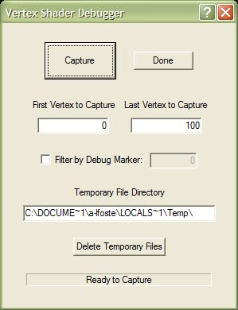
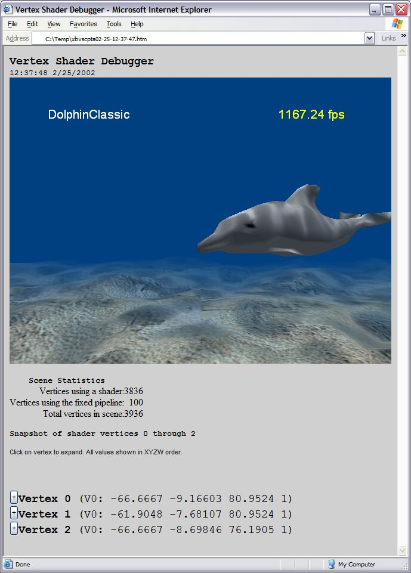
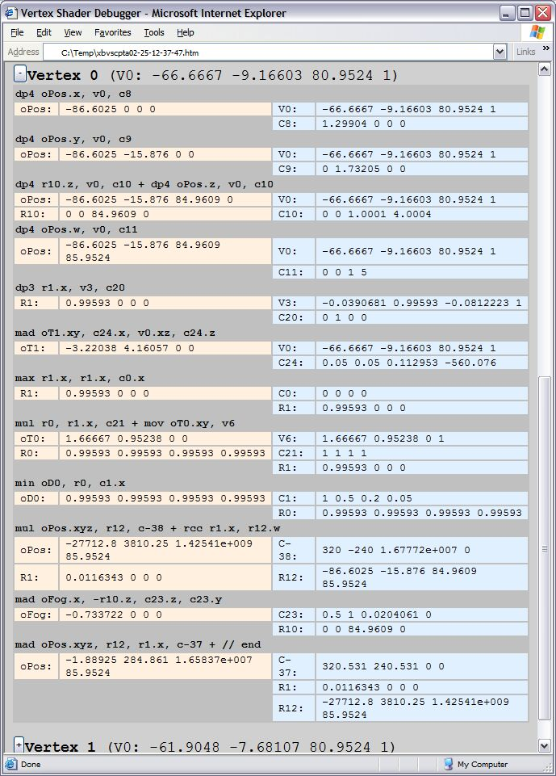

The Vertex Shader Debugger captures a frame from a title running on the Xbox Development Kit (XDK), and then generates a report of vertex shader information in that frame. This information is useful for debugging the code that makes up a vertex shader.
USAGE: xbvscapture
When first started, the Vertex Shader Debugger presents a dialog box, which looks similar to the following image:

By altering the values in the First Vertex to Capture and Last Vertex to Capture text boxes, you can control which vertices the tool captures. The tool will generate a report containing only the first 64 vertices that fall within the range you specify.
The Filter by Debug Marker option tells the Vertex Shader Debugger to only draw geometry that has been marked by the SetDebugMarker function. Only objects drawn with the indicated debug marker will appear in the report generated by XbVSCapture.
The Vertex Shader Debugger produces a number of temporary files when it generates its report. You can control where the tool writes these temporary files by changing the path listed in the Temporary File Directory text box. To remove files from this directory that are generated by the tool, click Delete Temporary Files.
You should already have the title you wish to debug running on your XDK. Once you have altered the tool's settings to your preferences, do the following:
The Vertex Shader Debugger takes a snapshot of the scene displayed by the XDK, and then opens Microsoft Internet Explorer and displays its report.
The Vertex Shader Debugger produces its report in the form of an HTML page, which looks similar to the following image:

At the top of the report are the time and date that the snapshot was taken, followed by a screen capture of the scene. Immediately following the screen capture are statistics detailing the number of vertices displayed in the scene, as well as the number of vertices that use a shader or the fixed pipeline.
A list of the specific vertices (that you requested the Vertex Shader Debugger to capture) is located below the statistics. The coordinates of each vertex are displayed in this list. Click a vertex to expand its details and view more information about the transformations performed by vertex shaders on that particular vertex. The vertex detail display will resemble the following image:

The Vertex Shader Debugger does not currently recognize vertices drawn using Begin/End or vertices inserted directly into the pushbuffer. It only recognizes vertices drawn using one of the following methods: DrawVertices, DrawIndexedVertices, DrawPrimitive, DrawIndexedPrimitive, DrawVerticesUP, DrawIndexedVerticesUP, DrawPrimitiveUP, and DrawIndexedPrimitiveUP.